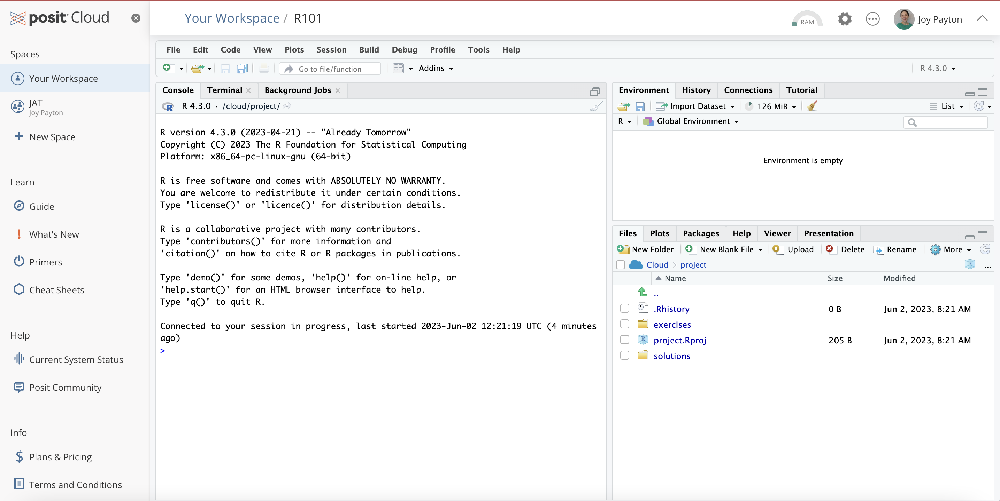

R Programming language for data analysis
RStudio Integrated development environment (IDE)
Quarto Computational document format
RStudio: On the Web and on Your Desktop


Posit.cloud
Hosted by Posit (in the cloud)
Posit Workbench
Hosted by you, your company, your university, on prem or in the cloud
RStudio Desktop
Installed on your computer
Your Turn #1
Go to https://posit.cloud/content/6050527 in your browser. If you’re not already logged in, log in to Posit.cloud.
You’ll see, at the top of your screen, that you are looking at a temporary copy. Please click on “Save a Permanent Copy”.
Click “yes” ( ) once you see something like the image below.
) once you see something like the image below.

01:00
The Duke Cancer Scandal
- Chemo sensitivity from microarrays
- Serious errors in data analysis
- Clinical trials based on flawed models
- Papers retracted, lawsuits settled

Point-and-Click…
… is not reproducible!
Anatomy of a Quarto Document

Rendering
You will see (“Knit”/“Preview” instead of “Render” in R Markdown documents)

Tidyverse
- A consistent way to organize data
- Human readable, concise, consistent code
- Build pipelines from atomic data analysis steps

Installing and Loading Packages

read_csv()

read_csv()
Your Turn #3
In the Files pane, click on the folder exercises.
Open the file titled 01 – Introduction.qmd. Instructions for this exercise are in the text of the document.
Click yes () when you are done.
05:00
Recap

Programming Language

IDE (Editor)
Document Format
Packages extend the functionality of R. Install with install.packages() and load with library()
Functions do stuff. They accept Arguments as input and return an Output. Capture an output in an Object using the assignment operator ( <- ).
Importing Data is the first step of data analysis. Use read_csv() from the tidyverse package to import data stored in a CSV file.
R for Data Science

In English: https://r4ds.had.co.nz/
English unofficial solutions at https://jrnold.github.io/r4ds-exercise-solutions/index.html
In Spanish: https://es.r4ds.hadley.nz/
File Formats

Databases

R Interface to Python

```{python}
import pandas
covid_testing.info()
```
Next Up: Visualize
Our next topic is: